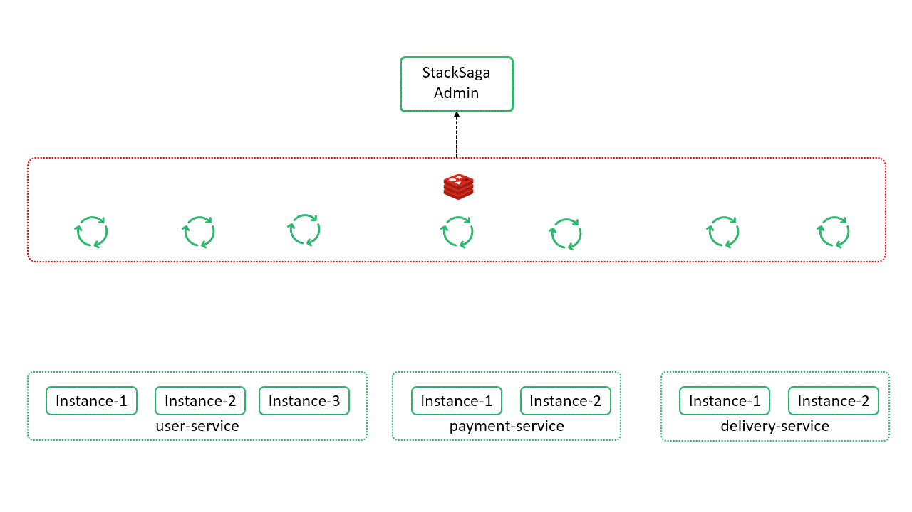
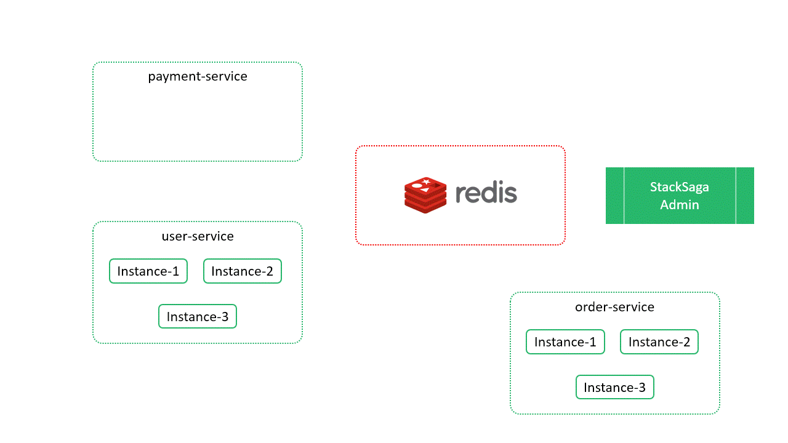

Real-time Circuit Breaker
Note
Before dive in to the Real-time Circuit Breaker, if you have no idea about the Circuit Breaker pattern it would be bettor reading this article.
The real-time CB works based on the live application's health. That means each servers
publish their health to one place for a period of time and then those health-information are
shared with each other interested microservices. The common place is the Redis server.
The
Redis server receives all the application health which use StackSaga. The health can be
positive or negative.
here you can see how the StackSaga clint application push the health to Redis server. it can be configured in your
application.

If
one service goes down, that server will notify their termination to the Redis server. Then
the admin
server also listening those changes through the Redis server. Then the admin server check
that at least is one service from the service which was changed in the Redis store and
really running on. If
the value is zero (There is no at least one server instance), other interested services
(StackSaga clients) will be notified as the
server X (server name) is down. Stacksaga clients save the interested servers
which
can
talk with StackSaga health protocol in their application's memory . The whole application,
there can have
many
microservices, But all of them might not use StackSaga framework. Then that kind of
non-stacksaga services don't publish their health though the Redis.
here you can see how the StackSaga client gets update to each other. the payment service is
down status (not live any server instance). and after while, one service goes up and after
the stating the server successfully, the framework will update their health to the Redis
server. then the Redis gets update. all the service updates have been subscribed
by the StackSaga admin server. then the admin server push a message for the services which
subscribed to that upped service's name. according to the image the user-service has
subscribed to the service's updates of payment-service.

How StackSaga Circuit Breaker deal with StackSaga client services and non-stacksaga services.
For instance, your microservice application can have many services called A,B,C,D likewise. you are going to execute a process from the A service by using StackSaga framework. that means The 'A' service use the StackSaga framework. and 'A' service is going to access B,C and D while the execution. then the SEC of the service 'A' check the application B is Up or not to be executed. due to the using the StackSaga framework in the service 'B', the service 'A' have already updated the status of the server 'B'. but just think the server C doesn't use StackSaga framework, the 'A' server can't get the status of the service 'C'. then the SEC of the service 'A' will skip the checking status of the service 'C' and execute the process (the circuit-breaker is not used).

- C1 Check the service-B is un and running, and due to the service is up and running the execution will be continued by the SCE and E1 the executor process successfully.
- The server-B doesn't use StackSaga. therefore, there is no health-checking when the executor of service-B is executed. E2 invoke the method without checking the health.
- C2 As the next step the 3rd executor is going to be invoked. nut the related service use StackSaga. therefore, there is a health checking process by the SEC. but the SEC gets know there is no any instance of service-D. then the SEC is not going to execute the executor. because there is no point in executing the executor without any instance.